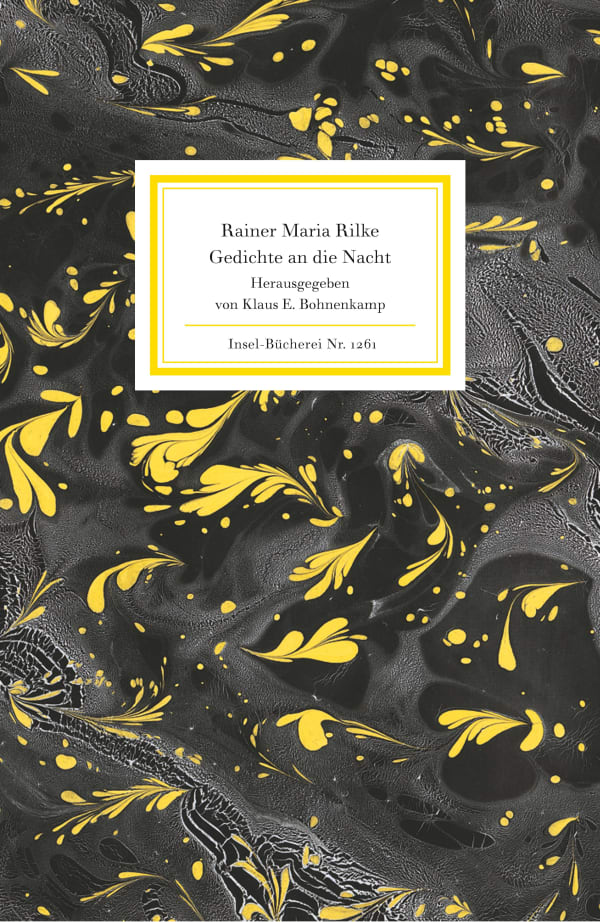

1:48 · 1 OPERA
Rainer Maria Rilke, Poesia alla notte.
Il filo del discorso
La lettura poetica accosta gli affanni umani all’ampiezza del cielo notturno. Dalle lacrime e dal volto rivolto in alto, il testo passa al movimento dello spazio e delle stelle; l’invito a respirare l’oscurità della terra introduce una conclusione in cui la notte sembra offrire spazio al volto umano. L’incipit e il percorso delle immagini consentono di ricondurre il brano a una poesia di Rilke identificata bibliograficamente dal suo incipit tedesco. La traduzione e l’edizione lette restano da accertare.
I libri nel discorso

Überfließende Himmel verschwendeter Sterne
Identificazione probabile
Copertina: Insel Verlag, Insel-Bücherei 1261, 2022 (prima edizione 2004)
Copertina della raccolta Gedichte an die Nacht, contenitore del componimento Überfließende Himmel verschwendeter Sterne. Edizione tedesca a cura di Klaus E. Bohnenkamp; non identificata nel video.
La lettura italiana inizia con cieli traboccanti di stelle e affanni umani, poi invita a volgere in alto il pianto e a respirare la notte: sequenza specifica del componimento.
Passaggio 0:15 ↗ · Fonti e libro ↗